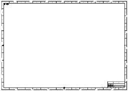
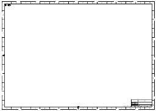

打开您的图纸并设置制图标准
-
点击标准工具条上的打开
 。
。 -
选择 drf5_drafting_standards 并点击确定。

-
选择工具→制图标准。
-
在要加载的标准组中，将标准设置为 ASME(出厂设置)并点击确定以接受新的标准设置。
当您加载新的制图标准时，某些注释和视图首选项设置将被修改以保持与新选定标准的一致。
点击标准工具条上的打开  。
。
选择 drf5_drafting_standards 并点击确定。

选择工具→制图标准。
在要加载的标准组中，将标准设置为 ASME(出厂设置)并点击确定以接受新的标准设置。
当您加载新的制图标准时，某些注释和视图首选项设置将被修改以保持与新选定标准的一致。